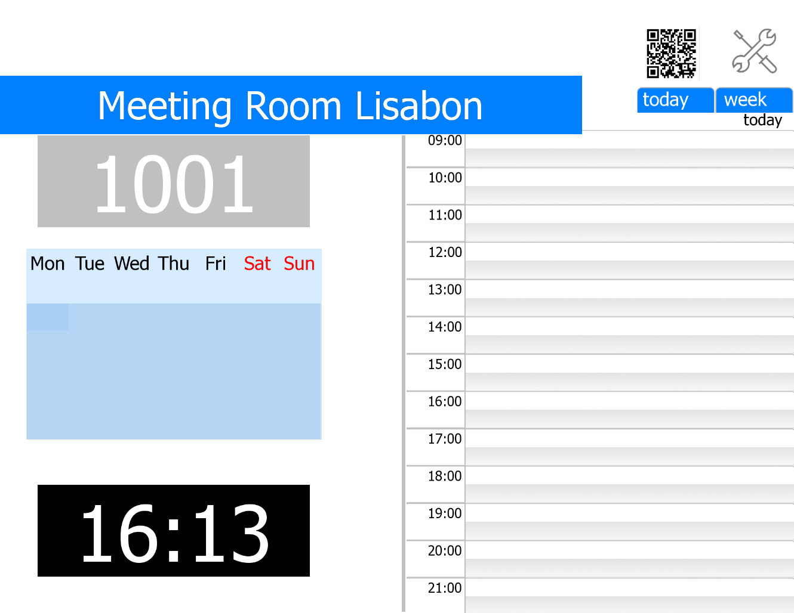

KNXlevelUP system is our know how: package of industrial PLC with software core Codesys in conjunction with visualization server Iridium with frontend and backend on JS code is a flexible and powerfull system with many features that can fulfill any wishes in automation.
- industrial PLC enables us to create failsafe systems with increased reliability, which processes scenario
logic with
unlimited duration. PLC with KNX inteface is original KNX device give you advantage of KNX technology.
- Iridium visualization server in different hardware implementation enables
us to
create functionally and graphically tailor-made HMI,
at the same time providing data firewall between KNX, Modbus TCP and AV/HTTP systems and allows to control
any
IP devices with multi-language interface. Also we build different task on it: BYOD, MS Exchange
integration, security and control system.
- Business Rules Engine (BRE) is KNXlevelUP module, which enables to separate all dependencies,
procedures and scenarios into a standalone software or hardware module: simplifies and increases control
quality of various modes and scenarios. *
*in upcoming release (planed for Q1 of 2019 machine learning
is
going to be incorporated in this module)

all factors affected on everyone lightgroup should be collected in only one place. You seebFB
example of one rule for one lightgroup.
and everyone lamp, blind, motor and etc should be done the same way.

the rules can be complicated, but the main is one output
- modular PLC is used as an interface between various engineering systems, which operate on different
physical
buses: KNX, DALI, Modbus, RS-485, LONbus, BACnet and others.
- logging system with collects, registers, stores and processes alarms and other events. Every one
alarm or event have to recieve they own priority level. Single notifications system for all events
thru the different ways.
- notifications through e-mail, SMS, SIP call, voice alarm (via multiroom system), Telegram
chat via the
telegram bot, system logging on remote syslog sever OR syslog server on user panel
- simplified procedure of system debugging for installers with logging in real time to
Telegram-channel OR on
user panel with visualization.
- Bring Your Own Device (BYOD) system is essential technology for residential and commercial spaces based on Iridium visualization. It enables use of visualization with limitations by roles and duration on any smartphone or tablets (for example, guest in a hotel room and use of conference room or mansions) on the fly. If you book meeting room, you can have visualization to control only this room during your reservation. Just scan QRcode
- MS Exchange Server integration - common solution in corporate segment for booking conference or meeting rooms from a doorsign touch panel or by e-mail. Can be used together with BYOD. Fully integrated in BMS, allows interaction with security service (for passing meeting persons to the building) or IT support & technical service for assistance.

door sign screen touch panel for booking meeting room with extra function
- storage of data in either local or cloud database with mathematical processing of it.
- Ad hoc reports from stored data: analysis, charts, prediction.
- A lot of iRidium drivers for variety of device types:
AV systems and receivers, projectors, TV, audio multiroom systems, SIP driver,
fingerprint scanners and lot more AND
also native drivers: KNX, Modbus, HDL, SIP, Helvar, Crestron, AMX, BACNet
We keep developing drivers for new devices. We can also develop drivers for
any IP devices on demand, if it has
published API.